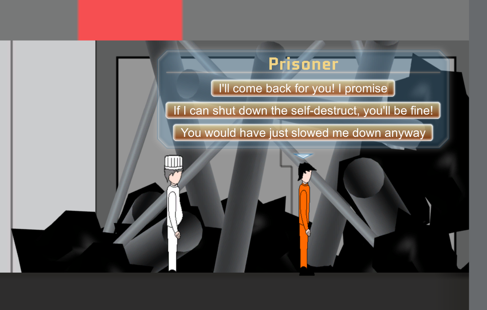

My name is Nicholas Mason. I am an undergraduate with a Bachelor's of Science at Simon Fraser University in the Interactive Arts & Technology program. There I learned many things including the Java language among others, Software, web and game programming, Android app development as well as more in-depth studies of algorithms in computer science courses I took.
My university learnings in Android development were supplemented with work experience at Real Bean education, whom I worked for as an intern Android developer for a summer. Here I worked alongside differently-skilled developers to build web communications for the company's app, as well as the basic User Interface
I am an aspiring software developer with a variety of skills in Programming languages, software development, version control, and interface design. My aspirations are to build great software, learn continually, and work alongside great people.
Projects
Siege Engineer
In Siege Engineer, the player controls a lone engineer defending against an army attacking his/her castle. It is up to the player to gather resources and repair structures to hold out until the end.
I worked on this project in a game design class in university with 4 other students. My role was game director and programmer for the project, and I worked alongside two other programmers, an artist and a level designer. We completed the project over the course of the semester and submitted this as our final project. It was shown to judges (developers in the game industry in Vancouver) and received praise for its fast-paced management gameplay and accessible art style.
This project stretched my abilities as a team leader and also taught me valuable lessons in game programming and development. For this project I had to manage differently skilled team mates who had diverse temperaments and learning styles, and direct them towards a vision of the completed game as well as a time frame for completing features. This was a challenging project and I am happy with the result but, being self-critical, there were things I would do differently. The team needed an easier concept to grasp as this was a game style outside our previous experience, and game design meetings took much longer than needed as a result. This meant less time for implementing features as major game systems had to be designed on paper first. I also would have spent more time building prefabs as our level designer had some difficulty divining our intent for certain objects and actors. That said, the project turned out nicely and the game can be played from start to finish.
Meme Machine
Meme Machine is a discord bot that pulls youtube videos from /r/youtubehaiku (a subreddit for short videos) and posts them to the assigned discord channel. It simply uses the RedditSharp library in combination with the Discord api to post a simple text message with all the urls of the videos, which Discord automatically formats into clickable videos.
This was my first time really delving into C#.net, and it was fun to write this simple program that does something fun. Future plans for it would to have it always running on a home server and posting videos every 6 hours or so. Other ways I'd like to expand on it would be to find other sources of short videos since currently it only pulls from Reddit.
Solar Wind
Solar Wind is a story-driven 2D platformer developed in the Unity engine. Inspired by the likes of Super Mario, Castlevania and Hollow Knight, it has the player making their way through a dying space station, saving (or sacrificing) others in order to make it through.
I worked on this game with a small team of 5 as game director, programmer level designer and story writer. Using C# in the Unity engine to build out the game's controls, collision, levels and platforming systems, my team and I worked diligently on this game for a short period of the semester as our final project.
This project taught me some valuable lessons in programming and game development. Alongside the skills built in C# and Unity, it taught me how to lay out base systems smartly so they could be expanded on and wouldn't slow down work in the long run.
Burnaby City Website

This is a project I worked on for University with two other students.
My main job was building the form pages and ensuring that the code was well formatted and error-free. This was not my first exposure to HTML and web site building as I had some experience with it from secondary school, but it was certainly the most comprehensive project I’ve worked on in web development.
We approached this project by looking at existing problems with the burnaby city site and thinking of ways to improve it. We narrowed it down to a few core issues. Among these issues was the fact that the categories set up for different services were not well formulated. They had different services in a few different places, and they also had some services under the wrong categories altogether.
Other issues were that the categories themselves were not descriptive, or grouped together in ways such that it wouldn’t make sense. Other general problems were that there was no clear indication to the user where they are in the site, or how far along in an order form they are. As the person primarily in charge of the information forms, I had to make sure that the user understood what was needed from the site alone, without needing extra help.
Youtube Without Login
The idea behind this project is to make a simple URL parsing program that transforms any valid Youtube video URL into one that allows the user to view the video without logging in.
I wrote it in PHP because I wanted to start building my skills in backend web languages (I only had some experience with PHP from a university class, and that was only the bare basics).

I started this by thinking about how I would want the program to work if I came here as a user. I decided that the site should basically eat a youtube URL and spit out a simple plaintext URL in response as quickly as possible. This meant it had to work on one page only. The way I went about this is by using regular expressions to parse down any potential youtube url into just the 11 character video id, then put that in a form that works without logging in.
If i were to expand on this project, I would make it a more comprehensive program that would allow downloading videos, reverse-searching the video via Google, or looking at the tags to find related videos.